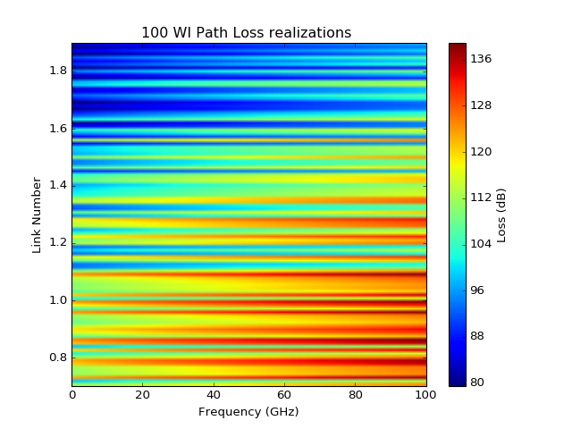

pylayers.antprop.loss.cost231¶
- pylayers.antprop.loss.cost231(pBS, pMS, hroof, phir, wr, fMHz, wb=20, dB=True, city='medium')¶
Walfish Ikegami model (COST 231)
Parameters: pBS : np.array (3xNlink)
pMS : np.array (3xNlink)
hroof : np.array (1xNlink)
phir : np.array (1xNlink)
degrees
wr : np.array (1xNlink)
fMHz : np.array (1xNf)
wb : float
average building separation
dB : boolean
Returns: PathLoss (Nlink,Nf) :
References
http://morse.colorado.edu/~tlen5510/text/classwebch3.html
Examples
>>> from pylayers.antprop.loss import * >>> import matplotlib.pyplot as plt >>> import numpy as np >>> # Number of links and BS and MS heights >>> Nlink = 100 >>> hBS = 300 >>> hMS = 1.5 >>> # hroof and phir are drawn uniformily at random >>> hroof = 40*np.random.rand(Nlink) >>> wr = 10*np.ones(Nlink) >>> phir = 90*np.random.rand(Nlink) >>> pMS = np.vstack((np.linspace(10,2500,Nlink),np.zeros(Nlink),hMS*np.ones(Nlink))) >>> pBS = np.vstack((np.zeros(Nlink),np.zeros(Nlink),hBS*np.ones(Nlink))) >>> # frequency range >>> fMHz = np.linspace(700,1900,120) >>> pl = cost231(pBS,pMS,hroof,phir,wr,fMHz) >>> im = plt.imshow(pl,extent=(0,100,0.7,1.9)) >>> cb = plt.colorbar() >>> cb.set_label('Loss (dB)') >>> plt.axis('tight') >>> plt.xlabel('Frequency (GHz)') >>> plt.ylabel('Link Number') >>> plt.title('100 WI Path Loss realizations ') >>> plt.show()
(Source code, png, hires.png, pdf)

{kind=link}
{kind=link}